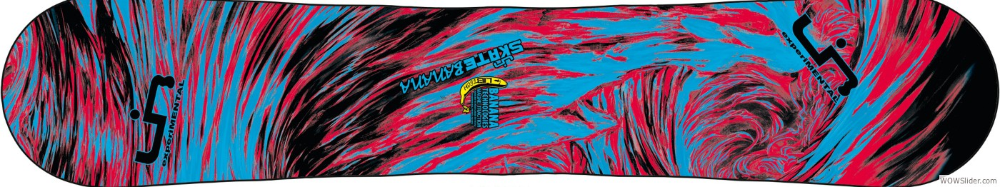

- 

This template has a responsive menu toggling system. The menu will appear collapsed on smaller screens, and will appear non-collapsed on larger screens. When toggled using the button below, the menu will appear/disappear. On small screens, the page content will be pushed off canvas.
#} {#Make sure to keep all page content within the #page-content-wrapper.
 1
1 2
2